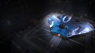

Трюм для руды (на практике)
~30–40 т
Два средних и два малых оружейных крепления позволяют поставить весь добывающий комплект: лазер, сейсмозаряды, подповерхностные ракеты и абразивный бластер. Всё это недорого и помещается на корабле для малой площадки. Но отсеки небольшие: после установки переработчика и контроллеров дронов на руду остаётся едва 30–40 т, а тонкий щит не выдержит серьёзного пирата. Для знакомства с добычей корабль хорош, но когда важен тоннаж, его пора менять.

Оценка пригодности корабля от 1 до 100 учитывает его полностью улучшенную сборку и сравнивает её с другими кораблями в этой роли. Подробнее: как оцениваются корабли.
В добыче важен тоннаж, а Cobra Mk III мала, поэтому состязаться с лидерами ей не по силам. Зато входной порог низкий: около 208 тыс. кредитов, без требований к рангу, четыре крепления и восемь дополнительных отсеков. Полный набор инструментов помещается сразу, так что астероиды можно вскрывать с первого дня. В два средних и два малых крепления одновременно ставятся добывающий лазер, пусковая установка сейсмозарядов, пусковая установка ракет подповерхностного смещения и абразивный бластер. Большинство бюджетных кораблей такого не умеют.
Ограничение — трюм. Всего три отсека четвёртого класса приходится делить между переработчиком, контроллерами дронов, щитом и стеллажами, так что за рейс вывезешь около 30–40 т переработанной руды. Это лишь доля от груза, который берут Type-8 или большой специализированный добытчик. Слабый щит означает, что настойчивый пират быстро прервёт добычу. Как первый корабль для знакомства с добычей на малой площадке Cobra оправдывает цену. Для серьёзного заработка она уступает любому специализированному кораблю.
Недорогая добыча для начинающих: попробуй лазер и подрыв ядер, найди тихую зону концентрации рядом с базой и освой весь цикл, прежде чем тратиться на специализированный корабль.
Три преимущества Cobra Mk III в бюджетной добыче и одно ограничение:
Cobra справляется с добычей, но везёт лишь долю груза специализированного корабля. Базовый щит примерно в 80 МДж не спасёт от серьёзного пирата в популярной зоне концентрации. Её преимущества — доступность и цена, а не объём добычи. Когда нужны тонны или безопасность, пора сменить корабль. Поэтому оценка остаётся чуть выше 50.
Корабль для малой площадки за примерно 208 тыс. кредитов вмещает полный комплект, но реальный груз ограничен 30–40 т руды, а щит — примерно 80 МДж.
Оценка 52/100 — итог по критериям, важным для добычи. У каждого критерия есть вес (его доля из 100). Баллы по нему зависят от того, как корабль показал себя на фоне остальных. Сумма баллов даёт итоговую оценку.
| Критерий | Баллы | Почему столько |
|---|---|---|
| Полезная вместимость руды | 10/35 | Три отсека четвёртого класса делят переработчик, два контроллера дронов-сборщиков и контроллер разведдронов. На практике остаётся 30–40 т руды (теоретический максимум около 64 т), тогда как Type-8 берёт около 406 т, а Type-9 — около 790 т. |
| Инструменты и отсеки | 18/25 | В двух средних и двух малых креплениях помещается полный комплект для лазерной добычи и подрыва ядер: лазер, сейсмозаряды, подповерхностные ракеты и абразивный бластер. Два внешних крепления остаются под импульсно-волновой анализатор и усилитель щита. Большинство бюджетных кораблей вмещают меньше. |
| Живучесть | 3/15 | Базовый щит всего около 80 МДж. Даже инженерная сборка с двухконтурным щитом и усилителем с «Усиленной конструкцией» (около 280 МДж) продержится против серьёзного пирата недолго. Лучше добывать там, где мало движения. |
| Площадка и доступность | 13/15 | Малая площадка даёт доступ к любому аванпосту и системам с кольцами, где большим специализированным кораблям негде сесть. По доступности Cobra среди лучших. |
| Цена и специализация | 8/10 | Корпус стоит около 208 тыс. кредитов, ранги и разрешения не нужны. Полное оснащение класса A — примерно 2 млн. Это самый дешёвый реальный вход в добычу. Но экономия на покупке не означает дешевизну добычи: в расчёте на тонну эксплуатация дороже, чем у Type-8. |
| Взвешенный итог | 52/100 | Эта сумма совпадает с общей оценкой корабля в этой роли. |
Вес критерия отражает приоритеты авторов гайда, а не формулу игры. Длина полосы показывает, какую долю от максимума корабль набрал по этому критерию. Подробнее: как оцениваются корабли.
Таблицы сравнивают корабли именно для добычии разделяют их по размеру посадочной площадки. Столбец Макс. груз показывает максимальный тоннаж трюма для руды. Итоговая оценка пригодности идёт по шкале от 1 до 100, как и на остальных страницах.
| Корабль | Класс | Макс. груз | Плюсы и минусы | Оценка |
|---|---|---|---|---|
| Cobra Mk V | Малая | ~110 т | Выше оценка; доступность площадок; инструментыТрюм для руды | 58 |
| Cobra Mk III этот | Малая | ~64 т | — отправная точка для сравнения | 52 |
| Adder | Малая | ~30 т | Доступность площадок; ценаНиже оценка; живучесть | 48 |
Из трёх оценённых кораблей для малой площадки лидирует Cobra Mk V (58). Все соперники в таблице требуют площадки того же класса. С них и стоит начинать сравнение перед покупкой.
| Корабль | Класс | Макс. груз | Плюсы и минусы | Оценка |
|---|---|---|---|---|
| Imperial Cutter | Большая | ~794 т | Выше оценка; инструменты; живучестьДоступность площадок | 92 |
| Type-9 Heavy | Большая | ~790 т | Выше оценка; трюм для руды; ценаЖивучесть | 90 |
| Anaconda | Большая | ~470 т | Выше оценка; инструменты; живучестьДоступность площадок | 86 |
| Type-7 Transporter | Большая | ~310 т | Выше оценка; цена; инструментыЖивучесть | 78 |
| Panther Clipper Mk II | Большая | ~662 т | Выше оценка; трюм для руды; инструментыЦена | 77 |
| Imperial Clipper | Большая | ~250 т | Выше оценка; цена; живучестьДоступность площадок | 70 |
| Type-10 Defender | Большая | ~534 т | Выше оценка; живучесть; инструментыЦена | 70 |
| Federal Corvette | Большая | ~618 т | Выше оценка; живучесть; трюм для рудыЦена | 64 |
| Caspian Explorer | Большая | ~434 т | Выше оценка; инструменты; живучестьЦена | 60 |
Из девяти оценённых кораблей для большой площадки лидирует Imperial Cutter (92). Они превосходят Cobra по цифрам, но требуют больших площадок и бюджета.
| Корабль | Класс | Макс. груз | Плюсы и минусы | Оценка |
|---|---|---|---|---|
| Type-11 Prospector | Средняя | ~288 т | Выше оценка; инструменты; доступность площадокЦена | 95 |
| Python | Средняя | ~294 т | Выше оценка; инструменты; живучестьТрюм для руды | 90 |
| Krait Mk II | Средняя | ~230 т | Выше оценка; живучесть; доступность площадокТрюм для руды | 84 |
| Type-8 Transporter | Средняя | ~406 т | Выше оценка; трюм для руды; инструментыЖивучесть | 84 |
| Krait Phantom | Средняя | ~190 т | Выше оценка; доступность площадок; инструментыЖивучесть | 70 |
| Corsair | Средняя | ~318 т | Выше оценка; живучесть; доступность площадокЦена | 68 |
| Keelback | Средняя | ~98 т | Выше оценка; живучесть; доступность площадокТрюм для руды | 68 |
| Asp Explorer | Средняя | ~130 т | Выше оценка; инструменты; доступность площадокЖивучесть | 64 |
| Type-6 Transporter | Средняя | ~114 т | Выше оценка; цена; доступность площадокЖивучесть | 62 |
Из девяти оценённых кораблей для средней площадки лидирует Type-11 Prospector (95). Исходное сравнение называет их более дешёвыми, уступающими по характеристикам и рассчитанными на более тесные площадки; таблица относит их к другому классу.
Примерно за 208 тыс. кредитов Cobra Mk III даёт один из самых дешёвых способов начать добычу. Ранг не нужен, выкуп после потери обходится недорого. Полный комплект с инструментами, малым переработчиком, контроллерами разведдронов и дронов-сборщиков, стеллажами и простым щитом стоит около 2 млн кредитов в классе A.
Главное преимущество — низкая цена входа. Несколько прибыльных лазерных рейсов окупят корабль и помогут накопить на специализированный. Но на тонну добычи Type-8 или большой добывающий корабль обходится намного дешевле. Cobra выгодно купить, но не так выгодно использовать для заработка.
Примерно 2 млн кредитов за полностью оснащённый добывающий корабль для малой площадки. Это недорогой способ освоить весь цикл перед покупкой специализированной модели.
Полный комплект для лазерной добычи и подрыва ядер на малой площадке. Простой щит отнимает часть объёма трюма. В начальной сборке только покупные модули, класс A — основа добычи, а инженерные улучшения дают дальность, низкий нагрев и двухконтурный щит. Сами добывающие инструменты практически не улучшаются. Если добываешь только лазером, убери сейсмозаряды и ракеты и поставь третий грузовой стеллаж.
| Отсек | Начальная · только покупка | Класс A · без улучшений | С инженерными улучшениями | Примечания |
|---|---|---|---|---|
| Оружейные крепления | ||||
| Среднее крепление 1 | 2D Добывающий лазер (неподвижный) | 2D Добывающий лазер (неподвижный) | (нет чертежа улучшения) | Основной инструмент лазерной добычи. Средний неподвижный лазер — самый большой, который сюда ставится; оружейные чертежи к добывающим инструментам не подходят. |
| Среднее крепление 2 | — | 2B Пусковая установка сейсмозарядов (неподвижный) | (нет чертежа улучшения) | Главный инструмент подрыва ядер: помести сейсмозаряды в трещины, чтобы расколоть астероид. Установка бывает только средней и неподвижной; инженерных улучшений нет. |
| Малое крепление 1 | — | 1B Ракетная установка подповерхностного смещения (неподвижный) | (нет чертежа улучшения) | Достаёт глубокие залежи, до которых не добирается бластер. Инженерных чертежей нет. |
| Малое крепление 2 | — | 1D Абразивный бластер (неподвижный) | (нет чертежа улучшения) | Сбивает поверхностные залежи со вскрытого ядра, чтобы дроны их собрали. Инженерных улучшений нет. |
| Внешние крепления | ||||
| Крепление 1 | — | 0C Импульсно-волновой анализатор | (нет чертежа улучшения) | Подсвечивает богатые астероиды и трещины в ядрах. Оставь класс 3, чтобы не перегрузить энергетику малого корабля. Для сканеров инженерного чертежа нет. |
| Крепление 2 | — | 0A Усилитель щита | G5 Усиленная конструкция + Суперконденсаторы | Один усилитель щита с «Усиленной конструкцией» примерно удваивает прочность малого двухконтурного щита. Это самый дешёвый способ повысить живучесть. |
| Основные модули | ||||
| Обшивка | Лёгкий сплав | Лёгкий сплав | Облегчение 5-й ступени (без экспериментального эффекта) | |
| Энергетическая установка | 4E Энергетическая установка | 4A Энергетическая установка | G5 Низкие выбросы + Рассеивание тепла | Класс A позволяет одновременно питать лазер, сейсмозаряды и дронов. «Низкие выбросы» и «Рассеивание тепла» снижают нагрев во время долгой добычи. |
| Маневровые двигатели | 4E Маневровые двигатели | 4A Маневровые двигатели | G5 Чистая настройка двигателей + Форсированные двигатели | Класс A маневровые двигатели с улучшением «Грязная настройка двигателей» и «Форсированными двигателями» помогают лёгкому кораблю уйти на форсаже от тех, кого он не победит после перехвата. |
| Рамочно-сместительный двигатель (FSD) | 4E Рамочно-сместительный двигатель (FSD) | 4A Рамочно-сместительный двигатель (FSD) | G5 Увеличенная дальность + Управление массой | «Увеличенная дальность» и «Управление массой» увеличивают каждый прыжок, чтобы Cobra долетала до дальних колец и возвращалась с рудой за меньшее число прыжков. |
| Система жизнеобеспечения | 3E Система жизнеобеспечения | 3D Система жизнеобеспечения | G5 Облегчение (без экспериментального эффекта) | Поставь класс D и «Облегчение» для системы жизнеобеспечения и сэкономь массу, что важно для малого корпуса. Экспериментального эффекта нет. |
| Распределитель энергии | 3E Распределитель энергии | 3A Распределитель энергии | G3 Упор на двигатели (без экспериментального эффекта) | Поставь распределитель третьего класса A, чтобы инструменты и дроны работали одновременно. «Упор на двигатели» 3-й ступени даёт запас на форсаж для ухода от пиратов. |
| Сенсоры | 3E Сенсоры | 3D Сенсоры | G5 Облегчение (без экспериментального эффекта) | Поставь класс D и «Облегчение». Дальнобойные сенсоры для добычи не нужны, лучше сэкономить массу. Экспериментального эффекта нет. |
| Топливный бак | 4C Топливный бак | 4C Топливный бак | (нет чертежа улучшения) | Штатный бак третьего класса. Вместимость фиксирована и не меняется инженерными улучшениями. |
| Дополнительные отсеки | ||||
| Размер 4 | 4E Грузовой стеллаж | 4E Грузовой стеллаж | (нет чертежа улучшения) | Необязательно. Дополнительное место для груза полезно, если регулярно его возишь. Грузовые стеллажи не улучшаются у инженеров. |
| Размер 4 | 4E Грузовой стеллаж | 4E Грузовой стеллаж | (нет чертежа улучшения) | Необязательно. Дополнительное место для груза полезно, если регулярно его возишь. Грузовые стеллажи не улучшаются у инженеров. |
| Размер 4 | 4E Генератор щита | 4C Генератор двухконтурного щита | G5 Укреплённый + Быстрая зарядка | Двухконтурный щит быстро восстанавливается под огнём. «Укреплённый» и «Быстрая зарядка» повышают прочность, сохраняя быстрое восстановление. Это страховка в уязвимые минуты подрыва ядра, а не защита для боя с пиратом. |
| Размер 2 | 2E Переработчик | 2A Переработчик | G5 Защищённый (без экспериментального эффекта) | Необязательно. «Защищённый» повышает прочность переработчика. Модуль перерабатывает добытые обломки. |
| Размер 2 | 1E Контроллер дронов-сборщиков | 1A Контроллер дронов-сборщиков | G5 Облегчение (без экспериментального эффекта) | Необязательно. «Облегчение» снижает массу контроллера. Модуль запускает дронов-сборщиков. |
| Размер 2 | — | 1A Контроллер дронов-сборщиков | G5 Облегчение (без экспериментального эффекта) | Необязательно. «Облегчение» снижает массу контроллера. Модуль запускает дронов-сборщиков. |
| Размер 1 | 1E Контроллер разведывательных дронов | 1A Контроллер разведывательных дронов | G5 Облегчение (без экспериментального эффекта) | Необязательно. «Облегчение» снижает массу контроллера. Модуль запускает разведывательных дронов. |
| Размер 1 | 1I Подробный сканер поверхности | 1I Подробный сканер поверхности | G5 Увеличенный радиус сканирования зондов (без экспериментального эффекта) | Необязательно. Улучшение увеличивает площадь, которую покрывает каждый зонд при составлении карты планеты. |
| Планировщики и экспорт | ||||
| Открыть в Coriolis | открыть | открыть | открыть | Открывает сборку на coriolis.io. |
| Открыть в EDSY | открыть | открыть | открыть | Открывает сборку на edsy.org. |
| Скопировать SLEF | Копирует выбранную сборку в формате экспорта оснащения корабля (SLEF). | |||
В крепления помещается весь комплект: добывающий лазер, сейсмозаряды, подповерхностные ракеты и абразивный бластер. Астероиды ищет импульсно-волновой анализатор. Мало места внутри: переработчик, два контроллера дронов-сборщиков и разведывательный контроллер оставляют только два стеллажа четвёртого класса, примерно 32 т. В спокойном месте можно снять щит и поставить третий стеллаж.
Купи корпус (около 208 тыс. кредитов), поставь модуль 2D: добывающий лазер, переработчик 2E и разведывательный контроллер, а также контроллер дронов-сборщиков. Этого хватает для обычной лазерной добычи.
Добавь подробный сканер поверхности для картографирования зон концентрации, два грузовых стеллажа для руды и оставь базовый щит 4E. С кораблём идёт штатная обшивка из лёгкого сплава. На этом этапе тратиться на обшивку не нужно.
Пока не ставь сейсмозаряды, подповерхностные ракеты, абразивный бластер, импульсно-волновой анализатор и усилитель щита. Эти крепления оставь пустыми до перехода на класс A, когда появятся подрыв ядер и более прочный щит.
Порядок оснащения бюджетного добывающего корабля:
Даже на малом корабле распределитель и энергоустановка класса A нужны для одновременной работы лазера, дронов и переработчика без перебоев. Обшивку оставь штатной: лёгкий сплав. Массу выгоднее тратить на руду и дальность, а не на военную обшивку. На распределителе оставь «Упор на двигатели» без экспериментального эффекта: дроны не расходуют заряд конденсатора. Остальные модули недорогие; итоговая цена ниже 2 млн кредитов.
Инженерных улучшений мало, и они касаются корабля, а не инструментов. Само добывающее оборудование практически не улучшается. Felicity Farseer доводит до максимума FSD. Закрепи чертежи для удалённых улучшений с 1-й по 5-ю ступень.
| Модуль | Чертёж | Экспериментальный эффект | Инженер |
|---|---|---|---|
| Распределитель энергии (3) | Упор на двигатели (G3) | — | The Dweller |
| Энергетическая установка (4) | Низкие выбросы (G5) | Рассеивание тепла | Hera Tani |
| Рамочно-сместительный двигатель (FSD) (4) | Увеличенная дальность (G5) | Управление массой | Felicity Farseer |
| Маневровые двигатели (4) | Грязная настройка двигателей (G5) | Форсированные двигатели | Professor Palin / Mel Brandon |
| Двухконтурный щит (4) | Укреплённый (G5) | Быстрая зарядка | Lei Cheung |
| Усилитель щита | Усиленная конструкция (G5) | Суперконденсаторы | Didi Vatermann |
| Обшивка | Облегчение (ступень 5) | — | Selene Jean |
Расход небольшой: малые модули и только чертежи дальности, нагрева и щита. Инструменты остаются штатными, так что долгий сбор материалов не нужен. Если запасы полны, хватит имеющегося. При необходимости уточни расход по каждому чертежу.
Ориентировочные показатели для трёх сборок. Точный результат зависит от оснащения:
| Показатель | Начальная | Класс A | С инженерными улучшениями |
|---|---|---|---|
| Руда за рейс (т) | ~16 | ~32 | ~40 |
| Шансы против пиратов | нет | ненадолго | ненадолго |
| Щит (МДж) | ~110 | ~150 | ~280 |
| Броня (прочность корпуса) | ~108 | ~108 | ~108 |
| Установленные инструменты | только лазер | все | все |
| Посадочная площадка | малая | малая | малая |
С улучшениями Cobra Mk III работает полным набором инструментов под скромным щитом, берёт около 40 т руды за рейс и садится на малой площадке. Штатная обшивка из лёгкого сплава получает «Облегчение», а маневровые двигатели — «Чистую настройку» и «Форсированные двигатели». Так уменьшаются масса, нагрев и энергопотребление, сохраняются дальность и работоспособность инструментов. Прочность корпуса одинакова во всех трёх вариантах: обшивку выбирают по массе, а не по живучести. Cobra умеет добывать из ядер и работать в зонах концентрации, но трюм и защита остаются ограничениями малого корабля. Поэтому оценка составляет 52: хороший корабль для обучения, а не серьёзного заработка.
Подойдёт любое металлическое или ледяное кольцо с нетронутыми запасами рядом с базой. Выбирай тихие системы с небольшим трафиком. С тонким щитом и маленьким трюмом Cobra лучше держаться от пиратов подальше.
Cobra Mk III — недорогой способ научиться добыче: он охотно подрывает ядра, недорого вмещает весь набор инструментов и садится на малой площадке. Но трюм около 30–40 т и слабый щит задают жёсткий предел: любой специализированный добывающий корабль увозит гораздо больше и лучше держит удар. Его оценка 52 заслужена: хороший первый корабль и слабый специалист. Купи его, чтобы освоить цикл добычи, и переходи на следующий, как только позволят кредиты.
Цифры в статье сверены авторами оригинала с источниками ниже.